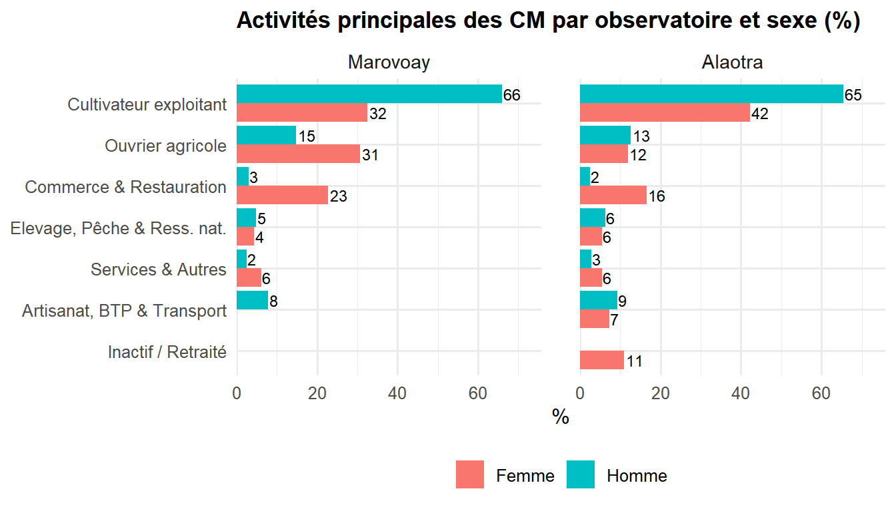

2Caractéristiques socio-démographiques des ménages
Le ménage est l’unité de base de l’enquête. Cette section décrit la composition des ménages, les caractéristiques des chefs de ménage et de leurs membres, ainsi que l’évolution de ces indicateurs.
WarningTravail de vérification en cours
Les résultats présentés ci-dessous sont provisoires et pourront être ajustés ou enrichis par les informations supplémentaires recueillies lors des restitutions locales.
Dans l’Alaotra, la riziculture irriguée constitue le socle de l’économie domestique, et la taille des exploitations rizicoles influence directement la structure et les revenus des ménages. Les fokontany proches des périmètres irrigués (Avaradrano, Feramanga Atsimo) présentent des profils économiques distincts de ceux situés en périphérie de la cuvette (Analamiranga, Maritampona), où la dépendance au riz pluvial et à l’élevage est plus marquée.
À Marovoay, la structure des ménages est marquée par l’hétérogénéité des stratégies économiques et des structures familiales. La proximité de la ville de Marovoay et de la route nationale RN4 reliant Antananarivo à Mahajanga facilite les échanges et influence les activités non agricoles des ménages.
Code
library(tidyverse)library(haven)library(gt)library(labelled)source("utils/helpers_report.R")source("utils/sites.R")source("utils/downloadable_output.R")res_deb <-read_dta("data/ROS_MDG_microdata/2025/res_deb.dta")res_m_a <-read_dta("data/ROS_MDG_microdata/2025/res_m_a.dta")# Merged dataset: all household members with observatory labelsmembers <- res_deb |>left_join(res_m_a, by ="j5") |>add_obs() |>assign_site() |>filter_for_profile()# Expanded version: observatory aggregate + per-site breakdowns# (no-op in consolidated mode, expands in observatory-specific profiles)members_site <- members |>expand_sites_for_profile()
2.1 Description des ménages
Les ménages de Marovoay sont globalement plus larges que ceux de l’Alaotra.
2.1.1 Taille des ménages par observatoire
La taille des ménages correspond au nombre total d’individus qui composent et vivent au sein d’une même ménage.
A Alaotra, on a recensé 1975 individus répartis dans 507 ménages. La taille moyenne des ménages s’établit à 3.9 personnes.
A Marovoay, on a recensé 2297 individus répartis dans 519 ménages. La taille moyenne des ménages s’établit à 4.4 personnes.
2.1.2 Taille des ménages par hameau et par observatoire
Pour Marovoay, Ampijoroa se distingue par les ménages les plus nombreux de l’échantillon tandis que les hameaux de l’Alaotra présentent une homogénéité plus forte autour de 4 personnes par foyer.
A Alaotra, les tailles varient peu : de 3.76 (Avaradrano) à 4.03 (Ambatoharanana, Ambatomanga, Mangabe).
A Marovoay , les contrastes sont plus marqués allant de 3.86 (Madiromiongana) à 4.81 (Ampijoroa).
Taille moyenne des ménages par hameau par observatoire
Hameau
Taille moyenne
Alaotra
Ambatoharanana
4.03
Analamiranga
3.98
Ambodivoara
3.86
Ambohidrony
3.81
Ambatomanga
4.03
Mangabe
4.03
Avaradrano
3.76
Feramanga Atsimo
3.81
Marovoay
Ampijoroa
4.81
Maroala
4.70
Madiromiongana
3.86
Bepako
4.35
Source : Enquête auprès des OR 2025
2.1.3 Structure par âge
La structure démographique des ménages enquêtés révèle une population jeune. Cette distribution, caractéristique des populations rurales malgaches, implique un fort taux de dépendance.
2.1.3.1 Au niveau des observatoires
La population est extrêmement jeune, avec une base de pyramide (0-10 ans) représentant près de 30 % des effectifs dans les deux zones. Marovoay présente un taux de dépendance des jeunes plus élevé qu’Alaotra.
A Alaotra, 37 % des individus ont moins de 15 ans. La population en âge de travailler (15–64 ans) représente 57.9 %, tandis que les personnes de 65 ans et plus ne constituent que 5.1 %.
A Marovoay, 40.7 % des individus ont moins de 15 ans, signe d’une population en croissance rapide. La population en âge de travailler (15–64 ans) représente 54.7 %, tandis que les personnes de 65 ans et plus ne constituent que 4.6 %. Cette structure démographique, caractérisée par une base large et un sommet étroit, est caractéristique des populations rurales malgaches et traduit un taux de dépendance élevé.
# #| fig-cap: "Répartition des membres des ménages par tranche d'âge selon les observatoires" # hh_age |> ror_bar_v(x = AgeGroup, y = Percent, y_label = "%", x_angle = 45)
L’origine géographique des chefs de ménage (CM) et de leurs conjoints renseigne sur les dynamiques migratoires et le degré d’ancrage local des familles. La classification distingue les tompon-tany (autochtones), les zana-tany (nés sur place de parents migrants), les valivotaka (migrants installés durablement) et les mpihavy (arrivants récents).
La répartition de ces catégories diffère sensiblement entre les deux observatoires. L’Alaotra reste une zone de peuplement stable, tandis que Marovoay illustre une dynamique migratoire historique forte, où les descendants de migrants sont désormais aussi nombreux que les natifs.
Dans l’Alaotra, la pression foncière croissante et l’attractivité des périmètres rizicoles aménagés se reflètent dans la composition des populations selon leur origine avec une forte dominance des «tompon-tany» à 66.8 % pour les chefs de ménage. . Les dynamiques migratoires et l’ancrage local varient selon la position des fokontany par rapport aux zones irriguées.
À Marovoay, l’équilibre entre tompon-tany (39 %) et zana-tany (39.4 %)varie selon les localités. La proportion de valivotaka et mpihavy reflète l’attractivité des zones rizicoles pour les migrants des régions voisines. Les raisons sociales (en particulier le mariage) dépassent largement les motivations économiques comme facteur d’installation.
Code
make_origin_histogram(members_site, m3, classify_origin, "Origine",obs_title("Distribution de l'origine des CM et conjoints"))
La provenance régionale des CM et conjoints qui ne sont pas natifs de la localité permet d’identifier les principaux bassins migratoires alimentant chaque observatoire.
À Alaotra, les chefs de ménage et leurs conjoints non natifs de la localité proviennent majoritairement de l’extérieur de la commune de résidence, avec respectivement 62.5% et 54.3%. Les personnes originaires de la même commune représentent ensuite 21.9% des chefs de ménage et 32.4% des conjoints. Enfin, les non natifs issus du même fokontany constituent 15.6% des chefs de ménage et 13.3% des conjoints.
À Marovoay, l’origine principale des chefs de ménage et de leurs conjoints non natifs de la localité se situe également hors de la commune de résidence, avec 89.1% des chefs de ménage et 74.5% des conjoints concernés. Par ailleurs, 19.1% des conjoints non natifs proviennent de la même commune.
Code
homeland_labels |>mutate(Member_Type =if_else(m6 ==1, "Chef de ménage", "Conjoint")) |>count(Observatory, Member_Type, Homeland) |>mutate(pct =round(n /sum(n) *100, 1), .by =c(Observatory, Member_Type)) |>ror_bar_grouped(x = Homeland, fill = Member_Type, y = pct,title ="Région d'origine des CM et conjoints",y_label ="%", direction ="horizontal")
Les raisons d’installation des CM et conjoints non originaires du lieu éclairent les motivations migratoires. Elles distinguent notamment les installations liées au mariage de celles motivées par les opportunités économiques (travail agricole ou non agricole).
À Alaotra, les motifs sociaux liés à la naissance, au mariage et aux attaches familiales constituent la principale raison d’implantation, aussi bien pour les conjoints (92.7%) que pour les chefs de ménage (90.3%). Les motivations d’ordre économique, liées au travail ou à l’accès aux ressources, ainsi que les autres motifs conjoncturels, demeurent marginales et restent toutes inférieures à 10% dans cet observatoire.
À Marovoay, les raisons sociales représentent également le principal motif d’implantation, avec 89.6% des conjoints et 83.8% des chefs de ménage concernés. Les motivations économiques, associées au travail et à l’accès aux ressources, occupent une place plus importante chez les chefs de ménage, où elles atteignent 15.6%, contre 9.8% chez les conjoints.
Code
make_origin_histogram(members_site, mg4a, classify_reason, "Raison",obs_title("Distribution des raisons d'implantation des CM et conjoints"))
Cette section analyse le profil des chefs de ménage dans les deux observatoires, en examinant notamment leurs caractéristiques socio-démographiques, leur niveau d’éducation, leur alphabétisation, ainsi que leurs activités principales.
2.2.1 Caractéristiques socio-démographiques
Le profil des chefs de ménage (CM) est décrit ci-dessous.
Dans l’Alaotra, 78.3 % des CM sont des hommes, soit 21.7 % de ménages dirigés par des femmes. L’âge moyen des CM est de 45.4 ans. Sur le plan conjugal, 74.2 % des CM vivent en couple (mariés ou en concubinage).
A Marovoay, 78 % des CM sont des hommes, soit 22 % de ménages dirigés par des femmes. L’âge moyen des CM est de 46.1 ans. Sur le plan conjugal, 73 % des CM vivent en couple (mariés ou en concubinage).
Le niveau d’éducation des chefs de ménage constitue un déterminant majeur de la capacité d’adaptation et de la vulnérabilité des ménages ruraux. L’analyse croisée par sexe met en évidence des disparités supplémentaires.
2.2.2.1 Niveau d’éducation du Chef de ménage
A Alaotra, le profil éducatif des chefs de ménage de l’Alaotra montre une forte prédominance de l’instruction primaire qui concerne 60.6 % de cet effectif. La zone affiche une performance notable en termes d’accès de base, puisque le taux de non-scolarisation est contenu à 7.9 %. L’accès au premier cycle du secondaire reste significatif pour 21.5 % des ménages.
À Marovoay, la structure éducative est plus hétérogène avec une part de non-scolarisation de 13.9 %. Si le niveau primaire demeure la référence pour 51.8 % des chefs, on note paradoxalement une insertion plus forte dans le premier cycle secondaire qui atteint 25.0 %. Ces chiffres traduisent une disparité interne plus marquée dans l’accès aux cycles d’études au sein de cet observatoire.
2.2.2.2 Niveau d’éducation des chefs de ménages par sexe
Il existe un fossé de genre persistant pour l’accès aux études longues : les hommes chefs de ménage ont environ deux fois plus de chances d’atteindre le second cycle du secondaire ou le niveau supérieur par rapport aux femmes, et ce, dans les deux observatoires. Le niveau “Primaire” reste le socle commun le plus fréquent pour les deux sexes, oscillant entre 49 % et 64 % selon les catégories.
A Alaotra, Le niveau primaire reste le socle commun pour les deux sexes, bien que légèrement plus élevé chez les femmes (63.6 % contre 59.7 % pour les hommes). L’accès au niveau secondaire 2ème cycle et supérieur est deux fois plus fréquent chez les hommes (8.8 %) que chez les femmes (4.5 %). Cette situation est marquée par une vulnérabilité des femmes à la base. Une disparité de genre marquée s’observe dès la non-scolarisation. Les femmes chefs de ménage sont nettement plus nombreuses à n’avoir jamais fréquenté l’école (14.5 %) par rapport aux hommes (6 %).
A Marovoay, les femmes chefs de ménage présentent des taux d’instruction nettement plus faibles que les hommes, ce qui accentue leur vulnérabilité socio-économique. Les hommes sont deux fois plus nombreux (9.1 %) que les femmes (4.4 %) à atteindre les cycles d’études les plus longs. Si les femmes de Marovoay accèdent plus souvent à l’école que les hommes (moins de non-scolarisées et plus de niveau primaire avec 61.4 %), elles sont plus précocement limitées dans leur progression vers les niveaux secondaires et supérieurs par rapport à leurs homologues masculins. Contrairement à la tendance habituelle, le taux de non-scolarisation est plus élevé chez les chefs de ménage hommes (14.6 %) que chez les femmes (11.4 %).
L’aptitude à lire et écrire conditionne l’accès à l’information, aux services publics et aux opportunités économiques. Les sections suivantes détaillent les compétences en lecture et en écriture séparément, en distinguant trois niveaux : lecture/écriture aisée, avec effort, ou absente.
2.2.3.1 Savoir lire
L’aptitude à la lecture est nettement supérieure dans le bassin de l’Alaotra. À Marovoay, un Chef de ménage sur 5 ne sait pas lire du tout.
Dans l’Alaotra, 84.4 % des CM savent lire aisément.
A Marovoay, 74 % des CM savent lire aisément. Les niveaux de lecture et d’écriture varient sensiblement selon les localités et le sexe. L’écart entre hommes et femmes en matière d’alphabétisation traduit un accès inégal à l’éducation qui se répercute sur la capacité des ménages féminins à accéder à l’information et aux services.
Code
literacy_3level(cm_site, s1a, "Aptitude à la lecture des chefs de ménage")
À Alaotra, la majorité des chefs de ménage savent lire, avec une proportion plus élevée chez les hommes (85.9%) que chez les femmes (79.1%). En revanche, la non-aptitude à la lecture est davantage observée chez les femmes, dont 16.4% déclarent ne pas savoir lire contre 7.3% des hommes.
À Marovoay, les niveaux d’aptitude à la lecture sont relativement similaires entre les sexes, avec 74.6% des femmes et 73.8% des hommes sachant lire. À l’inverse, les proportions de chefs de ménage ne sachant pas lire demeurent importantes, atteignant 20.5% chez les hommes et 18.4% chez les femmes.
La lecture avec difficulté concerne une faible proportion des chefs de ménage quelque soit leur genre.
Code
literacy_3level_bar(cm_site, s1a, "Aptitude à la lecture des CM selon le sexe")
Aptitude à la lecture des CM selon le sexe
2.2.3.2 Savoir écrire
On observe une corrélation presque parfaite entre lecture et écriture dans les deux zones.
A Alaotra, les difficultés d’écriture concernent 15.6 % des chefs de ménage, ce qui correspond au cumul de ceux qui ne savent pas écrire (10.3 %) et de ceux qui écrivent avec effort (5.3 %). Ce résultat témoigne d’un niveau d’alphabétisation relativement élevé dans cette zone, où 84.4 % des chefs de ménage maîtrisent l’écriture sans difficulté.
À Marovoay, la proportion de chefs de ménage rencontrant des obstacles face à l’écrit est nettement plus marquée, atteignant 27.1 %. Ce groupe se compose de 20.4 % de personnes incapables d’écrire et de 6.7 % de personnes le faisant avec effort.
Code
literacy_3level(cm_site, s1b, "Aptitude à l'écriture des chefs de ménage")
À Alaotra, la majorité des chefs de ménage savent écrire, avec une proportion plus élevée chez les hommes (85.9%) que chez les femmes (79.1%). En revanche, la non-aptitude à l’écriture est davantage observée chez les femmes, dont 16.4% déclarent ne pas savoir écrire, contre 8.6% des hommes.
À Marovoay, les niveaux d’aptitude à l’écriture sont relativement proches entre les sexes, avec 73.7% des femmes et 72.6% des hommes sachant écrire. Par ailleurs, les proportions de chefs de ménage ne sachant pas écrire demeurent importantes, atteignant 20.7% chez les hommes et 19.3% chez les femmes.
Les chefs de ménage capables d’écrire avec difficulté restent peu nombreux.
Code
literacy_3level_bar(cm_site, s1b, "Aptitude à l'écriture des CM selon le sexe")
Aptitude à l’écriture des CM selon le sexe
2.2.4 Activités principales des Chefs de ménage
L’activité économique principale des chefs de ménage traduit la structure productive de chaque observatoire. Les activités sont regroupées en catégories sectorielles inspirées de la CITI Rév. 4 afin de garantir un effectif suffisant dans chaque classe et de préserver la confidentialité statistique.
L’activité de «Cultivateur exploitant» occupe une place importante dans les deux OR. Les proportions des ouvriers agricoles indiquent un recours plus fréquent au salariat.
A Alaotra, la structure productive de cette zone est marquée par une forte prédominance des cultivateurs exploitants qui représentent 60.4 % des chefs de ménage. Le recours au salariat agricole est illustré par les ouvriers agricoles qui constituent 12.5 % des CM. Les activités liées à l’artisanat, au BTP et au transport occupent 8.9 % des CM tandis que l’élevage, la pêche et l’exploitation des ressources naturelles sont cités comme activité principale par 6.1 % d’entre eux.
A Marovoay, l’activité dominante est « Cultivateur exploitant » (58.6 % des CM). On note une part significative d’ouvriers agricoles qui comptent pour 18.3 % des CM. L’agriculture constitue le socle économique des ménages, les cultivateurs exploitants représentant la majorité des chefs de ménage. Le commerce et la restauration, l’artisanat, le BTP et le transport, ainsi que l’élevage et la pêche complètent le panorama des activités.Le commerce et la restauration représentent l’activité principale de 7.3 % des CM, suivi par les métiers de l’artisanat, du BTP et du transport qui concernent 6.7 % d’entre eux
Code
cm_act |>make_bar_obs(x = Act_principal, y = Percent,y_label ="%")
Figure 2.1: Activités principales des chefs de ménages
Cette section examine les activités principales des chefs de ménage selon leur genre au sein des deux observatoires.
A Alaotra, près de deux tiers des hommes CM (65.4 %) occupent la fonction de cultivateur exploitant tandis que cette proportion est de 42.2 % chez les femmes CM. Le secteur du commerce et de la restauration constitue la principale voie de diversification pour les femmes avec un taux d’activité de 16.5 % contre seulement 2.5 % pour les hommes. Une présence féminine plus forte est également observée dans la catégorie services et autres concernant16.5 % des femmes contre 3.8 % de leurs homologues masculins.
À Marovoay, la différenciation des activités selon le sexe est marquée. Les hommes sont majoritairement cultivateurs exploitants : 65.9 % des hommes CM sont cultivateurs exploitants, alors que seulement 32.5 % des femmes occupent ce statut. Un recours massif au salariat agricole est constaté chez les femmes CM avec 30.7 % contre 14.8 % pour les hommes. Par ailleurs, les femmes sont davantage présentes dans le commerce et la restauration.
Code
cm_act_sex_plt |>ror_bar_grouped(x = Act_principal, fill = Sexe, y = Percent,title ="Activit\u00e9s principales des CM par observatoire et sexe (%)",y_label ="%", direction ="horizontal")

Activités principales des CM par observatoire et sexe
2.3 Caractéristiques des autres membres de ménages
Les autres membres du ménage (conjoints, enfants, dépendants) constituent la majorité de la population recensée. Leur profil démographique, éducatif et économique complète celui des chefs de ménage et permet de dresser un portrait plus complet du capital humain des familles rurales.
2.3.1 Caractéristiques socio-démographiques
Cette section analyse les caractéristiques des conjoints, enfants et dépendants, qui forment la majorité des membres du ménage autres que le CM.
Dans l’Alaotra, les membres non-CM présentent un profil jeune avec une prédominance féminine marquée avec 59.8 % de femmes contre 39.9 % d’hommes, conformément à la structure démographique attendue dans les zones rurales malgaches.La structure par âge révèle une population particulièrement jeune dont la moyenne est de 19 ans et la médiane de 15 ans. Sur le plan matrimonial, le célibat concerne 38.2 % des individus tandis que le mariage traditionnel est pratiqué par 36.6 % des membres. Les unions civiles, religieuses ou polygames représentent 14.9 % des situations, alors que le divorce et le veuvage touchent respectivement 5 % et 2 % de cet effectif.
À Marovoay, les autres membres du ménage forment une population majoritairement féminine et jeune avec 58.8 % de femmes et 41.1 % d’hommes.Les indicateurs d’âge révèlent un profil démographique caractéristique des populations rurales en croissance. La population affiche une grande jeunesse avec un âge moyen de 18 ans et un âge médian de 14 ans. Pour les membres de 12 ans et plus, la prédominance des mariages selon la tradition (40.3 %) et du célibat (41.3 %) témoigne du maintien des pratiques matrimoniales coutumières.
Le niveau d’éducation des autres membres de ménage complète le portrait éducatif des familles. Les disparités entre sexes et entre observatoires donnent un aperçu des inégalités d’accès à l’éducation.
2.3.2.1 Niveau d’éducation des autres membres
L’analyse du niveau d’éducation des membres des ménages révèle des disparités importantes entre les deux bassins rizicoles notamment en termes d’accès initial à l’école et de poursuite des cycles d’études.
A Alaotra, l’instruction primaire constitue le niveau le plus répandu concernant 46.1 % des membres. Le taux de non-scolarisation y est de 18.5 %. Cette zone se démarque par une proportion élevée de membres ayant accédé aux études secondaires ou supérieures qui représentent 29.6 % de l’effectif.
À Marovoay, le niveau primaire reste majoritaire avec 48.0 % des membres. Cependant, l’observatoire affiche un retard structurel d’accès à l’école avec un taux de non-scolarisation s’élevant à 27.4 %. Concernant 20.8% des individus, l’accès aux niveaux secondaire et supérieur y est plus limité concernant 20.8 % des individus.
2.3.2.2 Niveau d’éducation des autres membres par sexe
A Alaotra, les femmes présentent globalement un meilleur profil de scolarisation que les hommes. Le niveau primaire constitue le socle éducatif pour 46.4 % des femmes et 45.6 % des hommes. L’accès au premier cycle du secondaire est nettement plus marqué pour les femmes, avec 22.2 % contre 15.4 % pour les hommes. L’accès au second cycle du secondaire et à l’enseignement supérieur concerne 10.8 % des membres féminins et 9.2 % des hommes. Enfin, le taux de non-scolarisation est de 15.2 % chez les femmes, alors qu’il s’élève à 23.2 % chez les hommes.
À Marovoay, le niveau primaire est atteint par 49.8 % des femmes et 45.6 % des membres masculins. La disparité de genre est particulièrement visible dans l’accès au premier cycle du secondaire qui touche 17.1 % des femmes contre seulement 10.4 % des hommes. Pour les niveaux d’études les plus élevés (second cycle et supérieur), les taux sont plus faibles et relativement proches entre les sexes avec 6.1 % pour les femmes et 6.7 % pour les hommes. In fine, les femmes affichent également une meilleure insertion scolaire initiale avec 24.4 % de personnes non scolarisées contre 31.8 % pour les hommes.
Cette section analyse les capacités de lecture et d’écriture des membres du ménage autres que le CM fournissant un indicateur de la qualité du capital humain au sein des familles rurales. L’évaluation distingue les personnes capables de lire ou d’écrire aisément de celles qui le font avec effort ou qui en sont incapables.
2.3.2.3.1 Savoir lire
FIGURE ET INTERPRETATION POUR “APTITUDE A LA LECTURE DES AUTRES MEMBRES”
A Alaotra, les femmes affichent une maîtrise de la lecture supérieure à celle des hommes avec une maitrise de 76.5 % contre 69.5 % respectivement. Les personnes lisant avec effort représentent 7.5 % des femmes et 9.0 % des hommes. L’absence totale de capacité de lecture concerne 15.9 % des femmes et 21.6 % des hommes.
À Marovoay, l’aptitude à la lecture est globalement moins répandue. La tendance en faveur des femmes persiste avec 59.3 % lisant sans difficulté contre 52.9 % pour les hommes. Cependant, 13.9 % des femmes et 16.9 % des hommes déclarent lire avec effort. Enfin, le taux de membres ne sachant pas lire du tout s’élève à 26.9 % chez les femmes et atteint 30.1 % chez les hommes.
Code
literacy_3level_bar(others_site, s1a, "Aptitude à la lecture des autres membres selon le sexe")
Aptitude à la lecture des autres membres selon le sexe
2.3.2.3.2 Savoir écrire
A Alaotra, l’aptitude à l’écriture est maîtrisée sans difficulté par 73.9 % des membres des ménages. Une part de 8.2 % déclare écrire avec effort tandis que 18.0 % des individus en sont totalement incapables.
À Marovoay, le niveau de compétence en écriture est sensiblement plus bas avec 56.8 % des membres capables d’écrire aisément. Les difficultés y sont plus marquées avec 15.0 % des personnes écrivant avec effort et 28.3 % déclarant ne pas savoir écrire du tout.
Code
literacy_3level(others_site, s1b, "Aptitude à l'écriture des autres membres")
A Alaotra, les femmes affichent une maîtrise de l’écriture supérieure à celle des hommes avec un taux respectivement de 76.6 % contre 69.3 %. Les personnes pratiquant l’écriture avec effort représentent 7.4 % des femmes et 9.4 % des hommes. Enfin, la part des individus totalement incapables d’écrire est plus faible chez les femmes (16.0 %) que chez les hommes (21.4 %).
À Marovoay, l’aptitude à l’écriture est globalement moins répandue. Cependant, la tendance en faveur des femmes persiste avec 59.2 % écrivant sans difficulté contre 53.0 % pour les hommes. Les difficultés à l’écrit sont marquées pour les deux sexes avec 13.6 % des femmes et 17.1 % des hommes déclarant écrire avec effort. Le taux de personnes ne possédant aucune compétence en écriture est élevé dans cet observatoire s’élevant à 27.3 % chez les femmes et atteignant 29.9 % chez les hommes.
Code
literacy_3level_bar(others_site, s1b, "Aptitude à l'écriture des autres membres selon le sexe")
Aptitude à l’écriture des autres membres selon le sexe
2.3.3 Scolarisation
Le taux de scolarisation des enfants de 6 à 14 ans constitue un indicateur clé du développement humain et de l’investissement des ménages dans l’éducation.
2.3.3.1 Taux de scolarisation des enfants de 6 à 14 ans
Dans l’Alaotra, le taux de scolarisation s’élève à 93.7 %.
Dans Marovoay, le taux de scolarisation s’élève à 81.7 %.
2.3.4 Activités principales des autres membres de ménages
La répartition sectorielle des activités des autres membres de ménage reflète la diversification économique au sein des familles et le rôle des conjoints et enfants dans l’économie du ménage. Les activités sont regroupées selon la même nomenclature sectorielle que pour les CM.
A Alaotra, les activités principales des autres membres sont dominées par les cultivateurs exploitants, qui représentent 53 % des individus. Les ouvriers agricoles ainsi que les activités de commerce et restauration occupent chacun 10 %. Les autres activités restent plus marginales et concernent les élèves et étudiants avec 7 %, les inactifs et retraités avec 6 %, les services et autres activités ainsi que l’élevage, la pêche et les ressources naturelles avec 5 % chacun, et enfin l’artisanat, le BTP et le transport avec 4 %.
A Marovoay, les cultivateurs exploitants constituent également l’activité principale la plus fréquente avec 49 %. Les ouvriers agricoles représentent 17 % des autres membres. Les activités restantes occupent des parts plus faibles, avec 9 % pour les élèves et étudiants ainsi que pour les inactifs et retraités, 8 % pour le commerce et la restauration, 4 % pour l’artisanat, le BTP et le transport, puis 2 % chacun pour les services et autres activités ainsi que pour l’élevage, la pêche et les ressources naturelles.
Code
other_act |>make_bar_obs(x = Act_principal, y = Percent,title =obs_title("Activités principales des autres membres (%)"),y_label ="%")
2.3.4.1 Activités principales des autres membres par sexe
A Alaotra, l’activité de cultivateur exploitant est majoritaire pour les deux sexes, concernant 54.9 % des femmes et 47.6 % des hommes. La diversification économique est marquée par une présence masculine importante dans le secteur des services et autres activités avec 17.9 % contre 8.7 % pour les femmes. À l’inverse, le secteur du commerce et de la restauration est une spécialisation essentiellement féminine touchant 13.5 % des femmes contre moins de 5 % des hommes. Le salariat agricole comme ouvrier concerne 10.8 % des femmes et 9.0 % des membres masculins. Le statut d’élève ou étudiant est plus fréquent chez les hommes avec 11.8 % contre 4.9 % pour les femmes. Enfin, l’élevage et les ressources naturelles occupent 7.5 % des hommes et 3.6 % des femmes, tandis que l’artisanat concerne 5.2 % des hommes et 3.4 % des femmes.
À Marovoay, la fonction de cultivateur exploitant est également prédominante, surtout chez les femmes qui sont 53.5 % contre 39.1 % pour les hommes. Le recours au salariat agricole est plus intense qu’à l’Alaotra, avec 18.6 % d’hommes et 16.7 % de femmes travaillant comme ouvriers agricoles. Une disparité majeure apparaît dans le statut d’élève ou étudiant, qui concerne 17.8 % des membres masculins mais seulement 5.7 % des membres féminins. Le secteur des services et autres activités emploie 14.3 % des hommes et 9.6 % des femmes. Le commerce et la restauration restent portés par les femmes avec un taux de 10.1 % contre moins de 5 % pour les hommes. Les secteurs de l’artisanat, du BTP et du transport occupent 5.4 % des hommes et 2.7 % des femmes. Enfin, l’élevage, la pêche et l’exploitation des ressources naturelles concernent 3.1 % des hommes et 1.7 % des membres féminins.
Code
other_act_sex_plt |>ror_bar_grouped(x = Act_principal, fill = Sexe, y = Percent,title ="Activités des autres membres par observatoire et sexe (%)",y_label ="%", direction ="horizontal")
2.4 Évolution des indicateurs démographiques (1996-2025)
Les observatoires disposent de données démographiques depuis les années 1990. Cette section retrace l’évolution de quatre indicateurs clés : la taille moyenne des ménages, la proportion de chefs de ménage femmes, le taux de scolarisation des 6-14 ans et l’âge moyen du chef de ménage.
CautionInterprétation : effet du panel et de l’échantillonnage
Les tendances présentées dans cette section doivent être interprétées avec prudence. Les observatoires suivaient un dispositif de panel : la première année, les ménages sont tirés au sort dans la localités, puis ils sont réinterrogés chaque année (avec remplacement partiel si le ménage a disparu ou refuse de répondre). En 2025, après dix ans d’interruption, un nouveau tirage a été effectué à partir du dénombrement. Les évolutions observées reflètent donc à la fois des dynamiques réelles dans les localités et des changements de composition de l’échantillon (vieillissement du panel, attrition sélective, renouvellement complet en 2025).
À Alaotra, la taille moyenne des ménages reste relativement stable entre 1999 et 2004, oscillant autour de 5.3 à 5.4 personnes par ménage. À partir de 2005, une hausse progressive est observée, la taille moyenne passant d’environ 5.7 personnes à près de 7 personnes en 2014. Cette évolution traduit une tendance à l’agrandissement des ménages au fil des années. Toutefois, une légère baisse est enregistrée à la fin de la période, avant une chute marquée en 2025 où la taille moyenne des ménages descend à environ 3.9 personnes.
À Marovoay, la taille moyenne des ménages présente davantage de fluctuations au cours de la période observée. Entre 1996 et 1999, elle augmente progressivement pour atteindre près de 5.8 personnes par ménage, avant de diminuer légèrement au début des années 2000. Une baisse très prononcée est observée en 2005, avec une taille moyenne inférieure à 4 personnes. Par la suite, une reprise rapide s’amorce dès 2006 et se poursuit jusqu’en 2014, où la taille moyenne dépasse 7 personnes par ménage, représentant le niveau le plus élevé de la série. En 2025, une diminution importante est également constatée, la taille moyenne des ménages revenant à environ 4.4 personnes.
Code
demog_trends |>make_trend_plot(y_var = taille_moy,y_label ="Taille moyenne du ménage",gap_year =2015)
Évolution de la taille moyenne des ménages (1996-2025)
À Alaotra, la proportion de femmes chefs de ménage augmente entre 1999 et 2001, passant d’environ 18.9% à plus de 21%. Par la suite, une tendance générale à la baisse est observée jusqu’en 2004. Entre 2005 et 2014, les variations restent relativement faibles, avec des proportions oscillant autour de 18% à 19%. En 2025, le pourcentage de femmes chefs de ménage connaît une nouvelle hausse et atteint environ 21.7%.
À Marovoay, l’évolution du pourcentage de femmes chefs de ménage apparaît plus irrégulière. Entre 1996 et 1998, la proportion diminue fortement pour atteindre près de 15.7%, avant d’augmenter progressivement au début des années 2000. Un pic marqué est observé en 2005, où la proportion dépasse 23%, représentant le niveau le plus élevé de la série. Après une baisse en 2006, la proportion repart à la hausse et se stabilise globalement autour de 21% à 22% jusqu’en 2014. En 2025, le pourcentage de femmes chefs de ménage reste élevé, atteignant environ 22%.
Code
if ("pct_fem_cm"%in%names(demog_trends)) { demog_trends |>filter(!is.na(pct_fem_cm)) |>make_trend_plot(y_var = pct_fem_cm,y_label ="% de chefs de ménage femmes",gap_year =2015)}
Évolution du pourcentage de chefs de ménage femmes (1996-2025)
À Alaotra, le taux de scolarisation des enfants de 6 à 14 ans demeure globalement élevé sur l’ensemble de la période observée. Après une baisse entre 1999 et 2000, le taux augmente fortement pour atteindre plus de 95% en 2003. Par la suite, quelques fluctuations sont observées, avec une diminution autour de 2007 et 2008, avant une nouvelle hausse en 2010. Entre 2011 et 2013, le taux reste relativement stable autour de 91% à 92%, puis progresse à nouveau en 2014 pour atteindre près de 94%. En 2025, le taux de scolarisation demeure élevé et se situe autour de 94%.
À Marovoay, le taux de scolarisation des enfants de 6 à 14 ans est plus faible et plus variable. Entre 1996 et 1998, une baisse importante est enregistrée, le taux descendant jusqu’à environ 64%. À partir de 1999, une amélioration progressive est observée, culminant à plus de 88% en 2003. Toutefois, après cette période, le taux connaît plusieurs fluctuations, avec des baisses notables en 2008 et entre 2011 et 2012. Malgré ces variations, le taux reste globalement compris entre 79% et 85% à partir de 2010. En 2025, le taux de scolarisation atteint environ 82%.
Code
if ("taux_scol"%in%names(demog_trends)) { demog_trends |>filter(!is.na(taux_scol)) |>make_trend_plot(y_var = taux_scol,y_label ="Taux de scolarisation 6-14 ans (%)",gap_year =2015)}
Évolution du taux de scolarisation des 6-14 ans (1996-2025)
À Alaotra, l’âge moyen des chefs de ménage augmente globalement au cours de la période observée. Entre 1999 et 2004, il oscille entre 44.5 et 46.7 ans, avant de connaître quelques fluctuations entre 2005 et 2010 autour de 46 ans. Une hausse plus marquée est ensuite observée en 2011 et 2012, où l’âge moyen atteint près de 48 ans. Après une légère baisse en 2013, il remonte en 2014 avant de diminuer de nouveau pour se situer autour de 46.9 ans. En 2025, l’âge moyen des chefs de ménage est d’environ 45.4 ans.
À Marovoay, l’âge moyen des chefs de ménage progresse entre 1996 et le début des années 2000, passant d’environ 44 ans à plus de 47 ans. Après une relative stabilité jusqu’en 2004, une chute importante est enregistrée en 2005, où l’âge moyen descend à près de 41 ans. Dès 2006, une forte remontée est observée et la tendance redevient croissante jusqu’en 2011, année durant laquelle l’âge moyen atteint son niveau le plus élevé, proche de 49 ans. Entre 2012 et 2014, l’âge moyen se maintient autour de 47 à 48 ans avec de faibles variations. En 2025, il s’établit à environ 46 ans.
Code
if ("age_cm_moy"%in%names(demog_trends)) { demog_trends |>filter(!is.na(age_cm_moy)) |>make_trend_plot(y_var = age_cm_moy,y_label ="Âge moyen du chef de ménage",gap_year =2015)}
Évolution de l’âge moyen du chef de ménage (1996-2025)


{kind=link}
{kind=link}
{kind=link}
{kind=link}
{kind=link}
{kind=link}
{kind=link}
{kind=link}
{kind=link}
{kind=link}
{kind=link}
{kind=link}
{kind=link}
{kind=link}
{kind=link}
{kind=link}
{kind=link}
{kind=link}
{kind=link}
{kind=link}
{kind=link}
{kind=link}
{kind=link}
{kind=link}
{kind=link}
{kind=link}